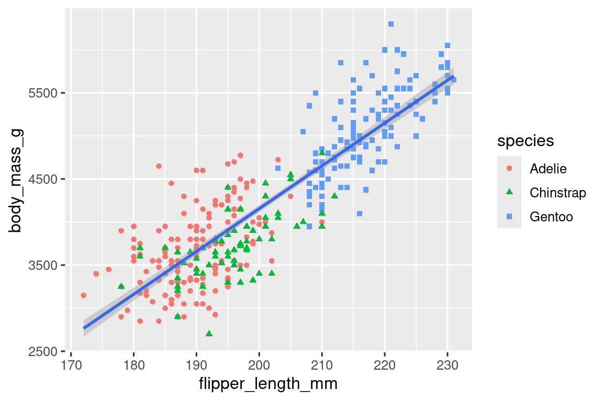
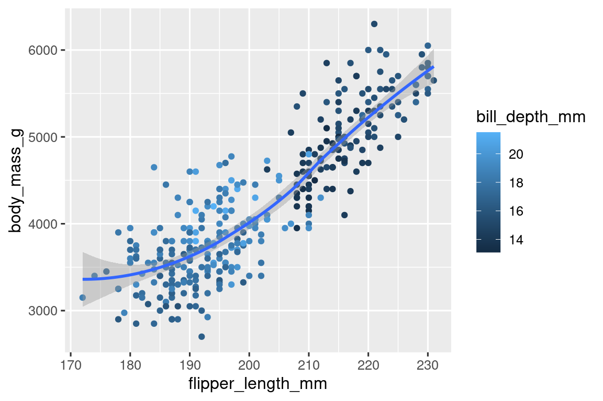
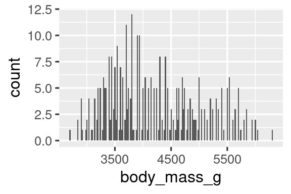
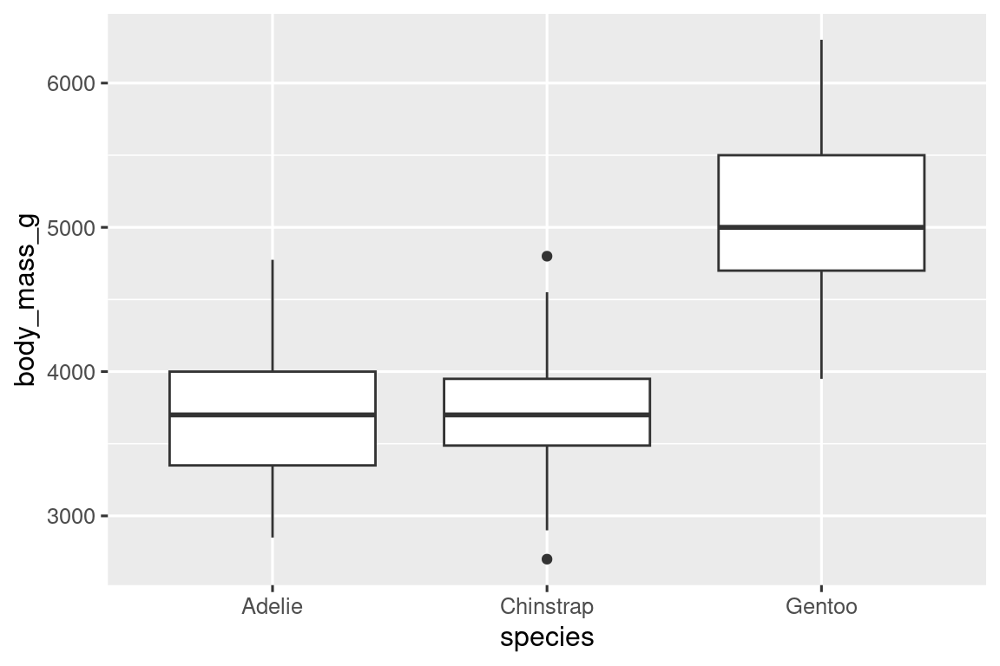

library(tidyverse)
#> ── Attaching core tidyverse packages ───────────────────── tidyverse 2.0.0 ──
#> ✔ dplyr 1.1.4 ✔ readr 2.1.5
#> ✔ forcats 1.0.0 ✔ stringr 1.5.1
#> ✔ ggplot2 3.5.0 ✔ tibble 3.2.1
#> ✔ lubridate 1.9.3 ✔ tidyr 1.3.1
#> ✔ purrr 1.0.2
#> ── Conflicts ─────────────────────────────────────── tidyverse_conflicts() ──
#> ✖ dplyr::filter() masks stats::filter()
#> ✖ dplyr::lag() masks stats::lag()
#> ℹ Use the conflicted package (<http://conflicted.r-lib.org/>) to force all conflicts to become errors1 Οπτικοποίηση δεδομένων
1.1 Εισαγωγή
“Το απλό γράφημα έχει φέρει περισσότερες πληροφορίες στο μυαλό του αναλυτή δεδομένων από οποιαδήποτε άλλη συσκευή.” — John Tukey
Η R διαθέτει αρκετά συστήματα για τη δημιουργία γραφημάτων, αλλά το πακέτο ggplot2 αποτελεί ένα από τα πιο κομψά και πολυδιάστατα. Η ggplot2 εφαρμόζει τη γραμματική των γραφικών, ένα συνεπές σύστημα για την περιγραφή και τη δημιουργία γραφημάτων. Με το πακέτο ggplot2, μπορείτε να κάνετε περισσότερα και πιο γρήγορα, μαθαίνοντας ένα σύστημα και εφαρμόζοντάς το σε πολλά σημεία.
Αυτό το κεφάλαιο θα σας διδάξει πως να οπτικοποιείτε τα δεδομένα σας χρησιμοποιώντας την ggplot2. Θα ξεκινήσουμε δημιουργώντας ένα απλό διάγραμμα διασποράς και θα το χρησιμοποιήσουμε για να εισάγουμε αισθητικές αντιστοιχίες και γεωμετρικά αντικείμενα - τα βασικά δομικά στοιχεία της ggplot2. Στη συνέχεια θα προχωρήσουμε στην οπτικοποίηση κατανομών μεμονωμένων μεταβλητών, καθώς και στην οπτικοποίηση σχέσεων ανάμεσα σε δύο ή και περισσότερες μεταβλητές. Τέλος, θα κλείσουμε αποθηκεύοντας τα γραφήματα και δίνοντας συμβουλές για την αντιμετώπιση προβλημάτων.
1.1.1 Προαπαιτούμενα
Αυτό το κεφάλαιο επικεντρώνεται στο πακέτο ggplot2, ένα από τα κεντρικά πακέτα του tidyverse. Για να αποκτήσετε πρόσβαση στα δεδομένα, τις βοηθητικές σελίδες και τις συναρτήσεις που χρησιμοποιούνται σε αυτό το κεφάλαιο, φορτώστε το tidyverse τρέχοντας:
Αυτή η μία γραμμή κώδικα φορτώνει τον κορμό του tidyverse, τα πακέτα που θα χρησιμοποιήσετε σχεδόν σε κάθε ανάλυση δεδομένων. Επίσης, σας ενημερώνει για το ποιες συναρτήσεις από το tidyverse συγκρούονται με συναρτήσεις του βασικού συνόλου λειτουργιών της R (ή από άλλα πακέτα που μπορεί να έχετε φορτώσει)1.
Εάν τρέξετε την παραπάνω γραμμή κώδικα και πάρετε μήνυμα σφάλματος there is no package called 'tidyverse', θα πρέπει πρώτα να το εγκαταστήσετε και στη συνέχεια να τρέξετε ξανά την εντολή library().
install.packages("tidyverse")
library(tidyverse)Χρειάζεται να εγκαταστήσετε ένα πακέτο μόνο μία φορά, αλλά θα πρέπει να το φορτώνεται κάθε φορά που ξεκινάτε μία νέα συνεδρία (session).
Μαζί με το tidyverse, θα χρησιμοποιήσουμε επίσης το πακέτο palmerpenguins, που περιλαμβάνει το σύνολο δεδομένων penguins, το οποίο περιέχει τις σωματικές μετρήσεις πιγκουίνων σε τρία νησιά του Αρχιπελάγους Πάλμερ και το πακέτο ggthemes, το οποίο προσφέρει μία χρωματική παλέτα ασφαλή για άτομα με αχρωματοψία.
1.2 Πρώτα βήματα
Οι πιγκουίνοι με μακρύτερα πτερύγια ζυγίζουν περισσότερο ή λιγότερο από πιγκουίνους με πιο κοντά πτερύγια; Πιθανότατα έχετε ήδη μία απάντηση, αλλά ας προσπαθήσουμε να κάνουμε την απάντηση μας πιο συγκεκριμένη. Πως δείχνει η σχέση ανάμεσα στο μήκος των πτερυγίων και τη μάζα του σώματος; Είναι θετική; Αρνητική; Γραμμική; Μη γραμμική; Μήπως διαφοροποιείται αυτή η σχέση ανάλογα με το είδος του πιγκουίνου; Ή ίσως με το νησί στο οποίο ο πιγκουίνος κατοικεί; Ας δημιουργήσουμε γραφήματα που μπορούμε να χρησιμοποιήσουμε για να απαντήσουμε αυτές τις ερωτήσεις.
1.2.1 Το πλαίσιο δεδομένων penguins
Μπορείτε να ελέγξετε τις απαντήσεις σας σε αυτές τις ερωτήσεις με το πλαίσιο δεδομένων penguins που περιέχεται στο palmerpenguins (δηλ. palmerpenguins::penguins). Ένα πλαίσιο δεδομένων είναι μία ορθογώνια συλλογή μεταβλητών (στις στήλες) και παρατηρήσεων (στις γραμμές). Το penguins περιέχει 344 παρατηρήσεις που έχουν συλλεχθεί και γίνει διαθέσιμες από την Δρ. Kristen Gorman και τον ερευνητικό σταθμό Πάλμερ, Antarctica LTER2.
Για να διευκολύνουμε τη συζήτηση, ας ορίσουμε μερικούς όρους:
Μία μεταβλητή είναι μία ποσότητα, ποιότητα ή ιδιότητα την οποία μπορούμε να μετρήσουμε.
Μία τιμή είναι η κατάσταση της μεταβλητής όταν την μετράμε. Η τιμή μιας μεταβλητής μπορεί να αλλάζει από μέτρηση σε μέτρηση.
Μία παρατήρηση είναι ένα σύνολο μετρήσεων που έχουν προκύψει κάτω από παρόμοιες συνθήκες (συνήθως λαμβάνουμε όλες τις μετρήσεις που αντιστοιχούν σε μία παρατήρηση την ίδια στιγμή και στο ίδιο αντικείμενο). Μία παρατήρηση μπορεί να περιέχει αρκετές τιμές, κάθε μία από τις οποίες συνδέεται με μία διαφορετική μεταβλητή. Μερικές φορές θα αναφερόμαστε σε μία παρατήρηση ως ένα σημείο δεδομένων.
Ένας πίνακας δεδομένων είναι ένα σύνολο τιμών, κάθε μία από τις οποίες συνδέεται με μία μεταβλητή και μία παρατήρηση. Δεδομένα σε μορφή πίνακα είναι τακτοποιημένα (tidy) εάν κάθε τιμή είναι τοποθετημένη στο δικό της “κελί”, κάθε μεταβλητή στη δική της στήλη και κάθε παρατήρηση στη δική της γραμμή.
Σε αυτό το πλαίσιο, μία μεταβλητή αναφέρεται σε μία ιδιότητα που έχουν όλοι οι πιγκουίνοι, και μία παρατήρηση αναφέρεται σε όλες τις ιδιότητες που έχει ένας συγκεκριμένος πιγκουίνος.
Πληκτρολογήστε το όνομα του πλαισίου δεδομένων στην κονσόλα και η R θα τυπώσει μία προεπισκόπηση των περιεχομένων του. Παρατηρήστε ότι πάνω από αυτήν την προεπισκόπηση γράφει tibble. Στο tidyverse, χρησιμοποιούμε ειδικά πλαίσια δεδομένων, τα οποία καλούνται tibbles και για τα οποία θα μάθετε περισσότερα σύντομα.
penguins
#> # A tibble: 344 × 8
#> species island bill_length_mm bill_depth_mm flipper_length_mm
#> <fct> <fct> <dbl> <dbl> <int>
#> 1 Adelie Torgersen 39.1 18.7 181
#> 2 Adelie Torgersen 39.5 17.4 186
#> 3 Adelie Torgersen 40.3 18 195
#> 4 Adelie Torgersen NA NA NA
#> 5 Adelie Torgersen 36.7 19.3 193
#> 6 Adelie Torgersen 39.3 20.6 190
#> # ℹ 338 more rows
#> # ℹ 3 more variables: body_mass_g <int>, sex <fct>, year <int>Αυτό το πλαίσιο δεδομένων περιέχει 8 στήλες. Για μία εναλλακτική οπτική, στην οποία μπορείτε να δείτε όλες τις μεταβλητές και κάποιες από τις πρώτες παρατηρήσεις κάθε μεταβλητής, χρησιμοποιήστε την glimpse(). Ή, εάν είστε στο RStudio, τρέξτε View(penguins) για να ανοίξει μία διαδραστική προβολή των δεδομένων.
glimpse(penguins)
#> Rows: 344
#> Columns: 8
#> $ species <fct> Adelie, Adelie, Adelie, Adelie, Adelie, Adelie, A…
#> $ island <fct> Torgersen, Torgersen, Torgersen, Torgersen, Torge…
#> $ bill_length_mm <dbl> 39.1, 39.5, 40.3, NA, 36.7, 39.3, 38.9, 39.2, 34.…
#> $ bill_depth_mm <dbl> 18.7, 17.4, 18.0, NA, 19.3, 20.6, 17.8, 19.6, 18.…
#> $ flipper_length_mm <int> 181, 186, 195, NA, 193, 190, 181, 195, 193, 190, …
#> $ body_mass_g <int> 3750, 3800, 3250, NA, 3450, 3650, 3625, 4675, 347…
#> $ sex <fct> male, female, female, NA, female, male, female, m…
#> $ year <int> 2007, 2007, 2007, 2007, 2007, 2007, 2007, 2007, 2…Ανάμεσα στις μεταβλητές του penguins βρίσκονται οι:
species: το είδος στο οποίο ανήκουν οι πιγκουίνοι (Adelie, Chinstrap, ή Gentoo).flipper_length_mm: το μήκος των φτερών κάθε πιγκουίνου, σε χιλιοστόμετρα.body_mass_g: η μάζα του σώματος κάθε πιγκουίνου, σε γραμμάρια.
Για να μάθετε περισσότερα για το penguins, ανοίξτε τη βοηθητική σελίδα τρέχοντας ?penguins.
1.2.2 Τελικός στόχος
![Ένα διάγραμμα διασποράς της μάζας σώματος έναντι του μήκους των φτερών των πιγκουίνων, το οποίο επικαλύπτεται με την γραμμή βέλτισης προσαρμογής για τη σχέση μεταξύ αυτών των δύο μεταβλητών. Το διάγραμμα αναπαριστά μια θετική, κατά βάση γραμμική και σχετικά ισχυρή σχέση ανάμεσα σε αυτές τις δύο μεταβλητές. Τα διαφορετικά είδη (Adelie, Chinstrap, and Gentoo) αναπαριστώνται με διαφορετικά χρώματα και σχήματα. Η σχέση μεταξύ της μάζας του σώματος και του μήκους των φτερών είναι περίπου ίδια ανάμεσα στα τρία αυτά είδη, ενώ οι πιγκουίνοι Gentoo είναι μεγαλύτεροι από τους πιγκουίνους που ανήκουν στα άλλα δύο είδη.](data-visualize_files/figure-html/unnamed-chunk-7-1.png)
1.2.3 Δημιουργώντας ένα διάγραμμα ggplot
Ας δημιουργήσουμε ξανά αυτό το διάγραμμα βήμα-βήμα.
Με το πακέτο ggplot2, ξεκινάτε το γράφημα με την συνάρτηση ggplot(), η οποία ορίζει ένα αντικείμενο γραφήματος και στη συνέχεια προσθέτετε επίπεδα (layers) σε αυτό. Το πρώτο όρισμα της ggplot() είναι το σύνολο δεδομένων που θα χρησιμοποιηθεί στο γράφημα, οπότε η εντολή ggplot(data = penguins) δημιουργεί ένα άδειο γράφημα που είναι προετοιμασμένο για να παρουσιάσει τα δεδομένα του penguins, αλλά μιας και δεν της έχουμε πει πως να τα οπτικοποιήσει ακόμη, προς το παρόν θα είναι άδειο. Αυτό δεν είναι ένα πολύ ενδιαφέρον διάγραμμα, αλλά μπορείτε να το σκέφτεστε σαν άδειο καμβά, πάνω στον οποίο θα ζωγραφίσετε τα υπόλοιπα επίπεδα του διαγράμματος σας.
ggplot(data = penguins)
Στη συνέχεια, πρέπει να πούμε στη ggplot() πως θέλουμε να αναπαρασταθεί γραφικά η πληροφορία που υπάρχει στα δεδομένα μας. Το όρισμα mapping της συνάρτησης ggplot() καθορίζει πως οι μεταβλητές από το δεδομένων σας αντιστοιχίζονται με οπτικές ιδιότητες (aesthetics ή αισθητικά στοιχεία) του γραφήματος σας. Το όρισμα mapping ορίζεται πάντα μέσα στην συνάρτηση aes(), και τα ορίσματα x και y της aes() προσδιορίζουν ποιες μεταβλητές θα αντιστοιχιστούν με τους άξονες x και y. Για την ώρα, θα αντιστοιχίσουμε μόνο το μήκος των φτερών στο αισθητικό στοιχείο x και τη μάζα σώματος στο y. Η ggplot2 αναζητά τις αντιστοιχισμένες μεταβλητές μέσα στο όρισμα data, που σε αυτή την περίπτωση είναι το σύνολο δεδομένων penguins.
Το ακόλουθο διάγραμμα δείχνει το αποτέλεσμα της προσθήκης αυτών των αντιστοιχίσεων.
Ο άδειος καμβάς μας έχει πλέον περισσότερη δομή - είναι εμφανές το που θα απεικονίζεται το μήκος των πτερυγίων (στον άξονα των x) και που η μάζα σώματος (στον άξονα των y). Ωστόσο, οι πιγκουίνοι δεν είναι ακόμη στο γράφημα. Αυτό συμβαίνει γιατί δεν έχουμε ακόμη διατυπώσει, στον κώδικα μας, το πως να αναπαρασταθούν οι παρατηρήσεις του συνόλου δεδομένων μας στο γράφημα μας.
Για να το κάνουμε αυτό, πρέπει να ορίσουμε ένα geom: το γεωμετρικό αντικείμενο που το γράφημα μας χρησιμοποιεί για να αναπαραστήσει δεδομένα. Αυτά τα γεωμετρικά αντικείμενα είναι διαθέσιμα στο πακέτο ggplot2 μέσω συναρτήσεων που ξεκινάνε με το πρόθεμα geom_. Ο κόσμος συχνά περιγράφει τα διαγράμματα με τον τύπο του γεωγραφικού αντικειμένου που χρησιμοποιείται από το διάγραμμα. Για παράδειγμα, τα ραβδογράμματα χρησιμοποιούν το γεωμετρικό στοιχείο των ράβδων (geom_bar()), το γραφήματα γραμμών χρησιμοποιούν το γεωμετρικό στοιχείο των γραμμών (geom_line()), τα θηκογράμματα χρησιμοποιούν το γεωμετρικό στοιχείο των θηκογραμμάτων (geom_boxplot()), τα διαγράμματα διασποράς χρησιμοποιούν το γεωμετρικό στοιχείο των σημείων (geom_point()), και ούτως καθεξής.
Η συνάρτηση geom_point() προσθέτει ένα επίπεδο σημείων στο διάγραμμα σας, το οποίο δημιουργεί ένα διάγραμμα διασποράς. Η ggplot2 έρχεται με πολλές γεωμετρικές συναρτήσεις, κάθε μία από τις οποίες προσθέτει ένα διαφορετικό τύπο επιπέδου σε ένα διάγραμμα. Στη διάρκεια αυτού του βιβλίου θα μάθετε αρκετές από αυτές τις γεωμετρικές συναρτήσεις, ειδικά στο Κεφάλαιο 9.
ggplot(
data = penguins,
mapping = aes(x = flipper_length_mm, y = body_mass_g)
) +
geom_point()
#> Warning: Removed 2 rows containing missing values or values outside the scale range
#> (`geom_point()`).
Τώρα έχουμε κάτι που μοιάζει με αυτό που θα θεωρούσαμε ως ένα “διάγραμμα διασποράς”. Δεν ταιριάζει ακόμη με τον τελικό μας στόχο, ωστόσο χρησιμοποιώντας αυτό το διάγραμμα μπορούμε να αρχίσουμε να απαντάμε την ερώτηση που μας έδωσε το κίνητρο γι’ αυτήν την ανάλυση: “Πως δείχνει η σχέση ανάμεσα στο μήκος των πτερυγίων και τη μάζα σώματος;” Η σχέση αυτή φαίνεται να είναι θετική (όσο αυξάνει το μήκος πτερυγίων, το ίδιο κάνει κι η μάζα σώματος), σχετικά γραμμική (τα σημεία διατάσσονται γύρω από μία γραμμή αντί για μία καμπύλη), και μέτρια ισχυρή (δεν υπάρχει ιδιαίτερη διασπορά γύρω από μία τέτοια γραμμή). Πιγκουίνοι με μακρύτερα πτερύγια είναι γενικά μεγαλύτεροι από άποψη σωματικής μάζας.
Πριν προσθέσουμε επιπλέον επίπεδα σε αυτό το διάγραμμα, ας σταματήσουμε για μία στιγμή για να εξετάσουμε το προειδοποιητικό μήνυμα που λάβαμε:
Removed 2 rows containing missing values (
geom_point()).
Ο λόγος που βλέπουμε αυτό το μήνυμα είναι επειδή υπάρχουν 2 πιγκουίνοι ανάμεσα στα δεδομένα μας με κενές τιμές μάζας σώματος και/ή μήκους πτερυγίων και το πακέτο ggplot2 δεν έχει τρόπο να τους αναπαραστήσει στο διάγραμμα χωρίς και τις δύο αυτές τιμές. Όπως και η R, έτσι και το πακέτο ggplot2 ακολουθεί τη φιλοσοφία ότι οι κενές τιμές δεν θα πρέπει ποτέ να εξαφανίζονται σιωπηλά. Αυτός ο τύπος της προειδοποίησης είναι ένα από το πιο συχνά προειδοποιητικά μηνύματα που θα δείτε όταν δουλεύετε με πραγματικά δεδομένα – οι κενές τιμές είναι ένα πολύ συχνό θέμα για το οποίο θα μάθετε περισσότερα στην πορεία αυτού του βιβλίου, ειδικά στο Κεφάλαιο 18. Για τα υπόλοιπα διαγράμματα σε αυτό το κεφάλαιο θα καταστείλουμε αυτήν την προειδοποίηση για να μην τυπώνεται μαζί με κάθε διάγραμμα που φτιάχνουμε.
1.2.4 Προσθέτοντας αισθητικά στοιχεία και επίπεδα
Τα διαγράμματα διασποράς είναι χρήσιμα για την αναπαράσταση της σχέσης ανάμεσα σε δύο αριθμητικές μεταβλητές, ωστόσο είναι πάντα μία καλή ιδέα να είστε επιφυλακτικοί όσον αφορά προφανείς σχέσεις ανάμεσα σε δύο μεταβλητές και να να αναρωτιέστε εάν μπορεί να υπάρχουν άλλες μεταβλητές που εξηγούν ή τροποποιούν τη φύση αυτής της προφανούς σχέσης.
Για παράδειγμα, η σχέση ανάμεσα στο μήκος των πτερυγίων και τη μάζα σώματος διαφέρει ανάλογα με το είδος; Ας ενσωματώσουμε το είδος στο διάγραμμα μας για να δούμε εάν αποκαλύπτει πρόσθετες πληροφορίες σχετικά με τη φαινομενική σχέση μεταξύ αυτών των μεταβλητών. Αυτό θα το κάνουμε αναπαριστώντας το είδος με σημεία διαφορετικού χρώματος.
Για να το πετύχουμε αυτό, θα χρειαστεί να τροποποιήσουμε τα αισθητικά στοιχεία ή την geom; Αν μαντέψατε “την αντιστοίχιση των αισθητικών στοιχείων, μέσα στην aes()”, έχετε ήδη αρχίσει να συνηθίζετε να δημιουργείτε οπτικοποιήσεις δεδομένων με ggplot2! Αν πάλι όχι, μην ανησυχείτε. Στην πορεία αυτού του βιβλίου θα δημιουργήσετε πολλά ακόμη διαγράμματα με την ggplot και θα έχετε πολλές ακόμη ευκαιρίες να τεστάρετε τη διαίσθηση σας καθώς τα δημιουργείτε.
ggplot(
data = penguins,
mapping = aes(x = flipper_length_mm, y = body_mass_g, color = species)
) +
geom_point()
Όταν μία κατηγορική μεταβλητή αντιστοιχίζεται με ένα αισθητικό στοιχείο, το πακέτο ggplot2 θα αναθέσει αυτόματα μία μοναδική τιμή αυτού του αισθητικού στοιχείου (σε αυτή την περίπτωση ένα μοναδικό χρώμα) σε κάθε μοναδικό επίπεδο της μεταβλητής (κάθε ένα από τρία είδη), μία διαδικασία γνωστή ως κλιμάκωση (scaling). Η ggplot2 θα προσθέσει επίσης ένα υπόμνημα που εξηγεί ποιες τιμές αντιστοιχούν σε ποια επίπεδα.
Τώρα, ας προσθέσουμε ακόμη ένα επίπεδο: μία ομαλή καμπύλη που αναπαριστά τη σχέση ανάμεσα στη μάζα σώματος και το μήκος φτερών. Πριν προχωρήσετε, δείτε ξανά τον παραπάνω κώδικα και σκεφτείτε πως μπορούμε να κάνουμε αυτή την προσθήκη στον ήδη υπάρχον κώδικα μας.
Μιας και αυτό είναι ένα νέο γεωμετρικό στοιχείο που αντιπροσωπεύει τα δεδομένα μας, θα προσθέσουμε ένα νέο geom ως επιπλέον επίπεδο, πάνω από το geom των μεμονωμένων σημείων: geom_smooth().
Επίσης, θα ορίσουμε ότι θέλουμε να σχεδιάσουμε τη γραμμή καλύτερης προσαρμογής σύμφωνα με ένα γραμμικό μοντέλο (linear mode), χρησιμοποιώντας το όρισμα method = "lm".
ggplot(
data = penguins,
mapping = aes(x = flipper_length_mm, y = body_mass_g, color = species)
) +
geom_point() +
geom_smooth(method = "lm")
Έχουμε προσθέσει επιτυχώς γραμμές, αλλά το διάγραμμα δεν μοιάζει με το διάγραμμα από την Ενότητα 1.2.2, το οποίο έχει μόνο μία γραμμή για ολόκληρο το σύνολο δεδομένων αντί για ξεχωριστές γραμμές για κάθε ένα από τα είδη πιγκουίνων.
Όταν οι αισθητικές αντιστοιχίσεις ορίζονται στην ggplot(), σε global (καθολικό) επίπεδο, μεταβιβάζονται σε κάθε ένα από τα επόμενα geom επίπεδα του διάγραμμα. Ωστόσο, κάθε geom συνάρτηση στο πακέτο ggplot2 μπορεί επίσης να λάβει ένα mapping όρισμα, το οποίο επιτρέπει αισθητικές αντιστοιχίσεις σε local (τοπικό) επίπεδο που προστίθενται σε αυτές που κληρονομήθηκαν από το καθολικό επίπεδο. Μιας και θέλουμε τα σημεία να χρωματίζονται με βάση το είδος, αλλά δεν θέλουμε οι γραμμές γι’ αυτά να διαχωρίζονται, θα πρέπει να ορίσουμε την παράμετρο color = species μόνο για το στοιχείο geom_point().
ggplot(
data = penguins,
mapping = aes(x = flipper_length_mm, y = body_mass_g)
) +
geom_point(mapping = aes(color = species)) +
geom_smooth(method = "lm")
Voila! Έχουμε κάτι που μοιάζει αρκετά με τον τελικό μας στόχο, αν και δεν είναι ακόμα τέλειο. Πρέπει ακόμα να χρησιμοποιήσουμε διαφορετικά σχήματα για κάθε είδος πιγκουίνων και να βελτιώσουμε τις ετικέτες.
Γενικά δεν είναι καλή ιδέα να αναπαριστούμε πληροφορίες χρησιμοποιώντας μόνο χρώματα σε ένα διάγραμμα, μιας και οι άνθρωποι αντιλαμβάνονται τα χρώματα διαφορετικά λόγω αχρωματοψίας ή άλλων διαφορών στην έγχρωμη όραση. Επομένως, εκτός από το χρώμα, μπορούμε επίσης να αντιστοιχίσουμε το είδος (species) με την αισθητικό στοιχείο του σχήματος (shape).
ggplot(
data = penguins,
mapping = aes(x = flipper_length_mm, y = body_mass_g)
) +
geom_point(mapping = aes(color = species, shape = species)) +
geom_smooth(method = "lm")
Σημειώστε ότι το υπόμνημα ενημερώνεται αυτόματα για να αντικατοπτρίζει και τα διαφορετικά σχήματα των σημείων.
Τέλος, μπορούμε να βελτιώσουμε τις ετικέτες του σχεδίου μας χρησιμοποιώντας τη συνάρτηση labs() σε ένα νέο επίπεδο. Μερικά από τα ορίσματα του labs() μπορεί να είναι αυτονόητα: το title προσθέτει έναν τίτλο και το subtitle προσθέτει έναν υπότιτλο στο διάγραμμα. Άλλα ορίσματα ταιριάζουν με τις αισθητικές αντιστοιχίσεις, το x είναι η ετικέτα του άξονα των x, το y είναι η ετικέτα του άξονα των y και τα color και το shape ορίζουν την ετικέτα για το υπόμνημα. Επιπλέον, μπορούμε να βελτιώσουμε την χρωματική παλέτα ώστε να είναι ασφαλής για άτομα με αχρωματοψία, χρησιμοποιώντας τη συνάρτηση scale_color_colorblind()από το πακέτο ggthemes.
ggplot(
data = penguins,
mapping = aes(x = flipper_length_mm, y = body_mass_g)
) +
geom_point(aes(color = species, shape = species)) +
geom_smooth(method = "lm") +
labs(
title = "Body mass and flipper length",
subtitle = "Dimensions for Adelie, Chinstrap, and Gentoo Penguins",
x = "Flipper length (mm)", y = "Body mass (g)",
color = "Species", shape = "Species"
) +
scale_color_colorblind()![Ένα διάγραμμα διασποράς της μάζας σώματος έναντι του μήκους των φτερών των πιγκουίνων, που επικαλύπτεται με μία γραμμή βέλτιστης προσαρμογής που απεικονίζει τη σχέση μεταξύ αυτών των δύο μεταβλητών. Το διάγραμμα απεικονίζει μια θετική, αρκετά γραμμική, και σχετικά ισχυρή σχέση ανάμεσα στις δύο αυτές μεταβλητές. Τα είδη (Adelie, Chinstrap, and Gentoo) αναπαριστώνται με διαφορετικά χρώματα και σχήματα. Η σχέση ανάμεσα στη μάζα σώματος και το μήκος φτερών είναι σχετικά η ίδια για τα τρία είδη, ενώ οι πιγκουίνοι του είδους Gentoo είναι μεγαλύτεροι από τους πιγκουίνους που ανήκουν στα άλλα δύο είδη.](data-visualize_files/figure-html/unnamed-chunk-15-1.png)
Επιτέλους έχουμε ένα διάγραμμα που ταιριάζει τέλεια με τον “απόλυτο στόχο” μας!
1.2.5 Ασκήσεις
Πόσες γραμμές υπάρχουν στο
penguins; Πόσες στήλες;Τι περιγράφει η μεταβλητή
bill_depth_mmστο πλαίσιο δεδομένωνpenguins; Διαβάστε to κείμενο βοήθειας για το?penguinsγια να βρείτε την απάντηση.Δημιουργήστε ένα διάγραμμα διασποράς της μεταβλητής
bill_depth_mmέναντι τηςbill_length_mm. Πιο συγκεκριμένα, δημιουργήστε ένα διάγραμμα διασποράς με την μεταβλητήbill_depth_mmστον y άξονα και τηνbill_length_mmστον x άξονα. Περιγράψτε τη σχέση ανάμεσα στις δύο αυτές μεταβλητές.Τι συμβαίνει εάν δημιουργήσετε ένα διάγραμμα διασποράς της μεταβλητής
speciesεναντίον τηςbill_depth_mm; Ποια θα ήταν καλύτερη επιλογή ως στοιχείο geom;-
Γιατί το ακόλουθο κομμάτι κώδικα επιστρέφει σφάλμα και πως θα το διορθώνατε;
ggplot(data = penguins) + geom_point() Τι κάνει το όρισμα
na.rmστηνgeom_point(); Ποια είναι η προεπιλεγμένη τιμή του ορίσματος; Δημιουργήστε ένα διάγραμμα διασποράς όπου χρησιμοποιείται το όρισμα αυτό με τιμήTRUE.Προσθέστε το ακόλουθο επεξηγηματικό κείμενο στο διάγραμμα που δημιουργήσατε στην προηγούμενη άσκηση: “Τα δεδομένα προέρχονται από το πακέτο palmerpenguins” (“Data come from the palmerpenguins package.”) Υπόδειξη: Δείτε την τεκμηρίωση της
labs().-
Αναδημιουργήστε την ακόλουθη οπτικοποίηση. Σε ποιο αισθητικό στοιχείο θα έπρεπε να αντιστοιχιστεί η μεταβλητή
bill_depth_mm; Θα πρέπει να ορισθεί σε καθολικό επίπεδο ή στο επίπεδο των στοιχείων geom;
-
Εκτελέστε νοητικά τον παρακάτω κώδικα και προβλέψτε πως θα δείχνει το αποτέλεσμα. Στη συνέχεια, εκτελέστε τον κώδικα στην R και συγκρίνετε τις προβλέψεις σας.
ggplot( data = penguins, mapping = aes(x = flipper_length_mm, y = body_mass_g, color = island) ) + geom_point() + geom_smooth(se = FALSE) -
Θα δείχνουν διαφορετικά αυτά τα δύο γραφήματα; Γιατί ναι ή όχι;
ggplot( data = penguins, mapping = aes(x = flipper_length_mm, y = body_mass_g) ) + geom_point() + geom_smooth() ggplot() + geom_point( data = penguins, mapping = aes(x = flipper_length_mm, y = body_mass_g) ) + geom_smooth( data = penguins, mapping = aes(x = flipper_length_mm, y = body_mass_g) )
1.3 Καλώντας το πακέτο ggplot2
Καθώς προχωράμε από αυτές τις εισαγωγικές ενότητες, θα μεταβούμε σε μία πιο συνοπτική έκφραση του κώδικα της ggplot2. Ως τώρα ήμασταν ιδιαίτερα σαφείς, κάτι που είναι βοηθητικό όταν μαθαίνετε:
ggplot(
data = penguins,
mapping = aes(x = flipper_length_mm, y = body_mass_g)
) +
geom_point()Συνήθως, τα πρώτα ένα ή δύο ορίσματα μιας συνάρτησης είναι τόσο σημαντικά που θα πρέπει να τα γνωρίζετε απ’ έξω. Τα δύο πρώτα ορίσματα της ggplot() είναι τα data και mapping, και στο υπόλοιπο βιβλίο, δεν θα παρέχουμε αυτά τα ονόματα. Αυτό εξοικονομεί από την πληκτρολόγηση, και μειώνοντας τον όγκο του επιπλέον κειμένου, διευκολύνει τον εντοπισμό διαφορών μεταξύ διαγραμμάτων. Αυτή είναι μία πολύ σημαντική προγραμματιστική ανησυχία στην οποία θα επανέλθουμε στο Κεφάλαιο 25.
Ξαναγράφοντας το προηγούμενο διάγραμμα πιο συνοπτικά οδηγεί στο:
ggplot(penguins, aes(x = flipper_length_mm, y = body_mass_g)) +
geom_point()Στο μέλλον, θα μάθετε επίσης για το pipe, |>, που θα σας επιτρέψει να δημιουργήσετε αυτό το διάγραμμα με:
penguins |>
ggplot(aes(x = flipper_length_mm, y = body_mass_g)) +
geom_point()1.4 Αναπαριστώντας κατανομές
Το πως θα αναπαραστήσετε την κατανομή μιας μεταβλητής εξαρτάται από τον τύπο της μεταβλητής: κατηγορική ή αριθμητική.
1.4.1 Μία κατηγορική μεταβλητή
Μία μεταβλητή είναι κατηγορική εάν μπορεί να πάρει τιμές από ένα μικρό σύνολο τιμών. Για να μελετήσετε την κατανομή μιας κατηγορικής μεταβλητής, μπορείτε να χρησιμοποιήσετε το ραβδόγραμμα. Το ύψος των ράβδων αναπαριστά το πλήθος των παρατηρήσεων που έχουν κάθε τιμή x.

Σε ραβδογράμματα κατηγορικών μεταβλητών με μη διατεταγμένα επίπεδα, όπως το είδος πιγκουίνου (species) παραπάνω, είναι συχνά προτιμότερο να αναδιατάσσονται οι ράβδοι με βάση τις συχνότητές τους. Για να γίνει αυτό, απαιτείται η μετατροπή της μεταβλητής σε παράγοντα (ο τρόπος με τον οποίο η R χειρίζεται κατηγορηματικά δεδομένα) και στη συνέχεια η αναδιάταξη των επιπέδων αυτού του παράγοντα.
ggplot(penguins, aes(x = fct_infreq(species))) +
geom_bar()
Θα μάθετε περισσότερα για παράγοντες και συναρτήσεις για να χειρίζεστε παράγοντες (όπως η fct_infreq() που παρουσιάζεται παραπάνω) στο Κεφάλαιο 16.
1.4.2 Μία αριθμητική μεταβλητή
Μία μεταβλητή είναι αριθμητική (ή ποσοτική) εάν μπορεί να πάρει ένα ευρύ φάσμα αριθμητικών τιμών και είναι λογικό να προσθέτουμε, αφαιρούμε ή να υπολογίζουμε μέσους όρους από αυτές τις τιμές. Οι αριθμητικές μεταβλητές μπορούν να είναι συνεχείς ή διακριτές.
Μία κοινώς χρησιμοποιούμενη οπτικοποίηση για κατανομές συνεχών μεταβλητών είναι το ιστόγραμμα.
ggplot(penguins, aes(x = body_mass_g)) +
geom_histogram(binwidth = 200)
Ένα ιστόγραμμα χωρίζει τον x άξονα σε ισαπέχουσες κλάσεις (bins) και στη συνέχεια χρησιμοποιεί το ύψος μιας ράβδου για να εμφανίσει τον αριθμό των παρατηρήσεων που εμπίπτουν σε κάθε κλάση.
Στο παραπάνω γράφημα, η ψηλότερη ράβδος δείχνει ότι 39 παρατηρήσεις έχουν τιμή body_mass_g μεταξύ 3.500 και 3.700 γραμμαρίων, που είναι η αριστερή και η δεξιά άκρη της ράβδου.
Μπορείτε να ορίσετε το πλάτος των διαστημάτων σε ένα ιστόγραμμα με το όρισμα binwidth, το οποίο έχει τις ίδιες μονάδες μέτρησης με τη μεταβλητής x.
Θα πρέπει πάντα να εξερευνάτε μία ποικιλία ευρών για τις κλάσεις όταν εργάζεστε με ιστογράμματα, καθώς διαφορετικές τιμές του binwidth μπορεί να αποκαλύπτουν διαφορετικά μοτίβα.
Στα παρακάτω διαγράμματα, ένα binwidth 20 είναι πολύ στενό, οδηγώντας σε πάρα πολλές ράβδους και καθιστώντας δύσκολο τον προσδιορισμό του σχήματος της κατανομής.
Παρομοίως, ένα binwidth 2.000 είναι πολύ μεγάλο, με αποτέλεσμα όλα τα δεδομένα να τοποθετούνται μόνο σε τρεις ράβδους, ενώ παράλληλα καθιστά δύσκολο τον προσδιορισμό του σχήματος της διανομής. Μία τιμή binwidth ίση με 200 παρέχει μία λογική ισορροπία.
ggplot(penguins, aes(x = body_mass_g)) +
geom_histogram(binwidth = 20)
ggplot(penguins, aes(x = body_mass_g)) +
geom_histogram(binwidth = 2000)
Μία εναλλακτική οπτικοποίηση για κατανομές αριθμητικών μεταβλητών είναι το διάγραμμα πυκνότητας. Ένα διάγραμμα πυκνότητας είναι μία εξομαλοποιημένη εκδοχή του ιστογράμματος και μία πρακτική εναλλακτική, ειδικά για συνεχή δεδομένα που προέρχονται από υποκείμενες ομαλές κατανομές. Δεν θα αναφερθούμε στο πως η geom_density() υπολογίζει την πυκνότητα (μπορείτε να διαβάσετε περισσότερα γι’ αυτήν στην αντίστοιχη τεκμηρίωση), αλλά ας εξηγήσουμε πως σχεδιάζεται η καμπύλη πυκνότητας χρησιμοποιώντας μία αναλογία. Φανταστείτε ένα ιστόγραμμα από ξύλινα τουβλάκια. Στη συνέχεια, φανταστείτε ότι ρίχνετε ένα μαγειρεμένο μακαρόνι από πάνω τους. Το σχήμα που θα πάρει το μακαρόνι, καθώς πέφτει πάνω από τα τουβλάκια, μπορεί να θεωρηθεί ότι είναι το σχήμα της καμπύλης πυκνότητας. Δίνει λιγότερες λεπτομέρειες από το ιστόγραμμα αλλά μπορεί μπορεί να διευκολύνει τη γρήγορη κατανόηση του σχήματος της κατανομής, ειδικά όσον αφορά την επικρατούσα τιμή και τη λοξότητα της.
ggplot(penguins, aes(x = body_mass_g)) +
geom_density()
#> Warning: Removed 2 rows containing non-finite outside the scale range
#> (`stat_density()`).1.4.3 Ασκήσεις
Δημιουργήστε ένα ραβδόγραμμα της μεταβλητής
speciesτου συνόλου δεδομένωνpenguins, όπου ορίζετε τηνspeciesωςyαισθητικό στοιχείο. Πως διαφέρει αυτό το διάγραμμα;-
Πως διαφέρουν τα δύο παρακάτω διαγράμματα; Ποιο αισθητικό στοιχείο, το
colorή τοfill, είναι πιο χρήσιμο για την αλλαγή του χρώματος των ράβδων; Ποιος είναι ο ρόλος του ορίσματος
binsστη συνάρτησηgeom_histogram();Δημιουργήστε ένα ιστόγραμμα της μεταβλητής
caratστο σύνολο δεδομένωνdiamondsπου είναι διαθέσιμο όταν φορτώνετε το πακέτο tidyverse. Πειραματιστείτε με διαφορετικές τιμές του binwidth. Ποια τιμή binwidth αποκαλύπτει τα πιο ενδιαφέρονται μοτίβα;
1.5 Οπτικοποιώντας σχέσεις
Για να οπτικοποιήσουμε μία σχέση πρέπει να έχουμε τουλάχιστον δύο μεταβλητές, που έχουν αντιστοιχιστεί σε αισθητικά στοιχεία ενός διαγράμματος. Στις επόμενες ενότητες θα μάθετε για τις γραφικές παραστάσεις που χρησιμοποιούνται συνήθως για την οπτικοποίηση των σχέσεων μεταξύ δύο ή περισσότερων μεταβλητών και τα γεωμετρικά στοιχεία που χρησιμοποιούνται για τη δημιουργία τους.
1.5.1 Μία αριθμητική και μία κατηγορική μεταβλητή
Για την οπτικοποίηση των σχέσεων ανάμεσα σε μία αριθμητική και μία κατηγορική μεταβλητή μπορούμε να χρησιμοποιήσουμε θηκογράμματα τοποθετημένα δίπλα-δίπλα. Ένα θηκόγραμμα είναι ένας τύπος οπτικής συντομογραφίας για μέτρα θέσης (εκατοστημόρια) που περιγράφουν μία κατανομή. Είναι επίσης χρήσιμο για το εντοπισμό πιθανών ακραίων τιμών. Όπως φαίνεται στο Σχήμα 1.1, κάθε θηκόγραμμα αποτελείται από:
Ένα κουτί που υποδεικνύει το εύρος τιμών του κεντρικού μισού όγκου των δεδομένων, μία απόσταση που είναι γνωστή ως το ενδοτεταρτημοριακό εύρος (interquartile range, IQR), που εκτείνεται από το 25ο εκατοστημόριο της κατανομής ως το 75ο εκατοστημόριο. Στο μέσο του κουτιού υπάρχει μία γραμμή που παρουσιάζει τη διάμεσο, δηλαδή το 50ο εκατοστημόριο της κατανομής. Αυτές οι τρεις γραμμές δίνουν μία αίσθηση της διασποράς της κατανομή και του εάν η κατανομή είναι συμμετρική γύρω από τη διάμεσο ή συγκεντρώνεται προς τη μία πλευρά.
Οπτικά σημεία που αναπαριστούν παρατηρήσεις που εκτείνονται πάνω από 1.5 φορές το IQR από οποιαδήποτε από τα άκρα του κουτιού. Αυτά τα ακραία σημεία είναι ασυνήθιστα, οπότε εμφανίζονται μεμονωμένα στο διάγραμμα.
Μία γραμμή (ή whisker) που εκτείνεται από κάθε ένα από τα άκρα του κουτιού και φτάνει μέχρι το πιο μακρινό σημείο της κατανομής που δεν αντιστοιχεί σε ακραίο σημείο.

Ας παρατηρήσουμε την κατανομή της μάζας σώματος σύμφωνα με το είδος, χρησιμοποιώντας τη συνάρτηση geom_boxplot():
ggplot(penguins, aes(x = species, y = body_mass_g)) +
geom_boxplot()
Εναλλακτικά, μπορούμε να φτιάξουμε ένα διάγραμμα πυκνότητας με την geom_density().
ggplot(penguins, aes(x = body_mass_g, color = species)) +
geom_density(linewidth = 0.75)Έχουμε επίσης εξατομικεύσει το πάχος των γραμμών χρησιμοποιώντας το όρισμα linewidth ώστε να τις κάνουμε να ξεχωρίζουν λίγο περισσότερο από το υπόβαθρο.
Επιπλέον, μπορούμε να αντιστοιχίσουμε τη μεταβλητή species στα αισθητικά στοιχεία color και fill και να χρησιμοποιήσουμε το αισθητικό στοιχείο alpha για να προσθέσουμε διαφάνεια στις καμπύλες πυκνότητας που έχουν προκύψει. Αυτό το στοιχείο παίρνει τιμές μεταξύ του 0 (απόλυτα διαυγές) και του 1 (απόλυτα αδιαφανές, πυκνό χρώμα). Στο ακόλουθο διάγραμμα η τιμή του ορίζεται στο 0.5.
ggplot(penguins, aes(x = body_mass_g, color = species, fill = species)) +
geom_density(alpha = 0.5)Παρατηρήστε την ορολογία που έχουμε χρησιμοποιήσει ως εδώ:
- Αντιστοιχίζουμε μεταβλητές σε αισθητικά στοιχεία εάν θέλουμε οι οπτικές ιδιότητες που αντιπροσωπεύουν αυτά τα στοιχεία να διαφέρουν ανάλογα με τις τιμές των αντίστοιχων μεταβλητών.
- Εναλλακτικά, ορίζουμε την τιμή ενός αισθητικού στοιχείου.
1.5.2 Δύο κατηγορικές μεταβλητές
Μπορούμε να χρησιμοποιήσουμε δύο στοιβαγμένα ραβδογράμματα για να οπτικοποιήσουμε τη σχέση ανάμεσα σε δύο κατηγορικές μεταβλητές. Για παράδειγμα, τα ακόλουθα δύο στοιβαγμένα ραβδογράμματα παρουσιάζουν τη σχέση ανάμεσα στις μεταβλητές island και species, ή πιο συγκεκριμένα, οπτικοποιούν την κατανομή του species σε κάθε νησί.
Το πρώτο διάγραμμα δείχνει τις συχνότητες κάθε είδους πιγκουίνων σε κάθε νησί. Το διάγραμμα των συχνοτήτων δείχνει ότι υπάρχει ίσος αριθμός Adelies σε κάθε νησί. Ωστόσο, δεν έχουμε ακόμη μία καλή αίσθηση του ποσοστού ισορροπίας μέσα σε κάθε νησί.
Το δεύτερο διάγραμμα, ένα διάγραμμα σχετικής συχνότητας που δημιουργείται ορίζοντας position = "fill" στο geom στοιχείο, και είναι πιο χρήσιμη για τη σύγκριση της κατανομής των διαφόρων ειδών στα νησιά, καθώς δεν επηρεάζεται από τον άνισο αριθμό πιγκουίνων στα νησιά. Χρησιμοποιώντας αυτό το διάγραμμα μπορούμε να παρατηρήσουμε ότι οι πιγκουίνοι Gentoo ζουν όλοι στο νησί Biscoe και αποτελούν περίπου το 75% των πιγκουίνων σε αυτό το νησί, οι Chinstrap ζουν όλοι στο νησί Dream και αποτελούν περίπου το 50% των πιγκουίνων σε αυτό το νησί και οι Adelie ζουν στο και τα τρία νησιά και αποτελούν όλους τους πιγκουίνους στο Torgersen.

Κατά τη δημιουργία αυτών των ραβδογραμμάτων, αντιστοιχίζουμε τη μεταβλητή που θα χωριστεί σε ράβδους με το αισθητικό στοιχείο x και τη μεταβλητή που θα αλλάζει τα χρώματα μέσα στις ράβδους στο αισθητικό στοιχείο fill.
1.5.3 Δύο αριθμητικές μεταβλητές
Μέχρι στιγμής έχετε μάθει για τα διαγράμματα διασποράς (δημιουργούνται με τη συνάρτηση geom_point()) και τις ομαλές καμπύλες (δημιουργούνται με την geom_smooth()) για την οπτικοποίηση της σχέσης μεταξύ δύο αριθμητικών μεταβλητών. Το διάγραμμα διασποράς είναι ίσως το πιο συχνά χρησιμοποιούμενο διάγραμμα για την απεικόνιση της σχέσης μεταξύ δύο αριθμητικών μεταβλητών.
ggplot(penguins, aes(x = flipper_length_mm, y = body_mass_g)) +
geom_point()
1.5.4 Τρεις ή περισσότερες μεταβλητές
Όπως είδαμε στην Ενότητα 1.2.4, μπορούμε να ενσωματώσουμε περισσότερες μεταβλητές σε ένα διάγραμμα αντιστοιχίζοντας τες σε πρόσθετα αισθητικά στοιχεία. Για παράδειγμα, στο παρακάτω διάγραμμα διασποράς τα χρώματα των σημείων αντιπροσωπεύουν είδη και τα σχήματα των σημείων αντιπροσωπεύουν νησιά.
ggplot(penguins, aes(x = flipper_length_mm, y = body_mass_g)) +
geom_point(aes(color = species, shape = island))
Ωστόσο, η προσθήκη πάρα πολλών αισθητικών αντιστοιχίσεων σε ένα διάγραμμα το κάνει ακατάστατο και δυσνόητο. Ένας άλλος τρόπος, που είναι ιδιαίτερα χρήσιμος για κατηγορικές μεταβλητές, είναι να χωρίσετε το διάγραμμα σας σε όψεις (facets), υπο-διαγράμματα, κάθε ένα από τα οποία απεικονίζει ένα υποσύνολο των δεδομένων.
Για να προσαρμόσετε το διάγραμμα με μία μόνο μεταβλητή, χρησιμοποιήστε τη συνάρτηση facet_wrap(). Το πρώτο όρισμα του facet_wrap() είναι μία φόρμουλα3, η οποία δημιουργείτε με το ~ ακολουθούμενο από το όνομα μιας μεταβλητής. Η μεταβλητή που εισάγεται στο facet_wrap() πρέπει να είναι κατηγορική.
ggplot(penguins, aes(x = flipper_length_mm, y = body_mass_g)) +
geom_point(aes(color = species, shape = species)) +
facet_wrap(~island)
Θα μάθετε για πολλά άλλα γεωμετρικά στοιχεία για την οπτικοποίηση των κατανομών μεταβλητών και των μεταξύ του σχέσεων στο Κεφάλαιο 9.
1.5.5 Ασκήσεις
Το σύνολο δεδομένων
mpgπου είναι ενσωματωμένο στο πακέτο ggplot2 περιέχει 234 παρατηρήσεις που έχουν συλλεχθεί από την Αμερικανική Υπηρεσία Προστασίας του Περιβάλλοντος (US Environmental Protection Agency) από 38 μοντέλα αυτοκινήτων. Ποιες μεταβλητές στοmpgείναι κατηγορικές; Ποιες μεταβλητές είναι αριθμητικές; (Υπόδειξη: Πληκτρολογήστε?mpgγια να διαβάσετε την τεκμηρίωση αυτού του συνόλου δεδομένων.) Πως μπορείτε να δείτε αυτή την πληροφορία όταν εκτελείτεmpgστην κονσόλα;Δημιουργήστε ένα διάγραμμα διασποράς της μεταβλητής
hwyέναντι τηςdisplχρησιμοποιώντας το πλαίσιο δεδομένωνmpg. Στη συνέχεια, αντιστοιχίστε μία τρίτη, αριθμητική μεταβλητή στοcolor, στη συνέχεια στοsize, μετά και στοcolorκαι στοsize, και τέλος στοshape. Πως συμπεριφέρονται διαφορετικά αυτά τα αισθητικά στοιχεία για κατηγορικές, σε σχέση με αριθμητικές μεταβλητές;Στο διάγραμμα διασποράς της
hwyέναντι τηςdispl, τι συμβαίνει εάν αντιστοιχίσετε μία τρίτη μεταβλητή στοlinewidth;Τι συμβαίνει εάν αντιστοιχίσετε την ίδια μεταβλητή σε πολλαπλά αισθητικά στοιχεία;
Δημιουργήστε ένα διάγραμμα διασποράς της
bill_depth_mmέναντι τηςbill_length_mmκαι χρωματίστε τα σημεία σύμφωνα με τη μεταβλητήspecies. Τι αποκαλύπτει η προσθήκη χρώματος σύμφωνα με το είδος για τη σχέση αυτών των δύο μεταβλητών; Και αντίστοιχα τι αποκαλύπτει η δημιουργία διαφορετικών όψεων με βάση τηνspecies;-
Γιατί ο παρακάτω κώδικας δημιουργεί δύο ξεχωριστά υπομνήματα; Πως θα το διορθώνατε ώστε να συνδυάζονται;
ggplot( data = penguins, mapping = aes( x = bill_length_mm, y = bill_depth_mm, color = species, shape = species ) ) + geom_point() + labs(color = "Species") -
Δημιουργήστε τα ακόλουθα στοιβαγμένα ραβδογράμματα. Ποια ερώτηση μπορείτε να απαντήσετε με το πρώτο; Ποια ερώτηση μπορείτε να απαντήσετε με το δεύτερο;
1.6 Αποθηκεύοντας τα διαγράμματά σας
Μόλις έχετε δημιουργήσει ένα διάγραμμα, μπορεί να θέλετε να το εξάγετε από την R, αποθηκεύοντας το σαν εικόνα, την οποία μπορείτε να χρησιμοποιήσετε οπουδήποτε αλλού. Αυτή είναι η δουλειά που εκτελεί η συνάρτηση ggsave(), η οποία θα αποθηκεύσει το πιο πρόσφατο διάγραμμα που έχει δημιουργηθεί στο δίσκο:
ggplot(penguins, aes(x = flipper_length_mm, y = body_mass_g)) +
geom_point()
ggsave(filename = "penguin-plot.png")Αυτό ο κώδικας θα αποθηκεύσει το διάγραμμα σας στο μονοπάτι εργασία σας, μία έννοια για την οποία θα μάθετε περισσότερα στο Κεφάλαιο 6.
Εαν δεν προσδιορίσετε τις παραμέτρους width και height, τότε αυτές θα προκύψουν από τις διαστάσεις της τρέχουσας συσκευής δημιουργίας διαγραμμάτων. Για να μπορεί ο κώδικάς σας να αναπαραχθεί στο μέλλον, θα ήταν καλύτερο να τις προσδιορίσετε. Μπορείτε να μάθετε περισσότερα για την ggsave() στην τεκμηρίωσή της.
Γενικά, ωστόσο, συνιστούμε να “συναρμολογείτε” τις τελικές αναφορές σας χρησιμοποιώντας το Quarto, ένα αναπαράξιμο σύστημα συγγραφής που σας επιτρέπει να ενθέσετε τον κώδικα και τον γραπτό λόγο σας και να συμπεριλαμβάνετε αυτόματα τα διαγράμματα σας στις αναφορές σας. Θα μάθετε περισσότερα για το Quarto στο Κεφάλαιο 28.
1.6.1 Ασκήσεις
-
Τρέξτε τις ακόλουθες γραμμές κώδικα. Ποιο από τα δύο διαγράμματα αποθηκεύεται ως
mpg-plot.png; Γιατί; Τι πρέπει να αλλάξετε στον παραπάνω κώδικα για να αποθηκεύει το διάγραμμα ως PDF αντί για PNG; Πως μπορείτε να γνωρίζετε τι τύπου αρχεία εικόνων μπορούν να δουλέψουν με την
ggsave();
1.7 Συχνά προβλήματα
Καθώς ξεκινάτε να εκτελείτε κώδικα R, είναι πιθανό να αντιμετωπίσετε προβλήματα. Μην ανησυχείτε — συμβαίνει σε όλους. Όλοι γράφουμε κώδικα R εδώ και χρόνια, αλλά καθημερινά γράφουμε κώδικα που δεν λειτουργεί με την πρώτη προσπάθεια!
Ξεκινήστε συγκρίνοντας προσεκτικά τον κώδικα που εκτελείτε με τον κώδικα που αναφέρεται στο βιβλίο. Η R είναι εξαιρετικά επιλεκτική και ένας άστοχος χαρακτήρας μπορεί να κάνει τη διαφορά. Βεβαιωθείτε ότι κάθε ( αντιστοιχίζεται με ένα ) και κάθε " αντιστοιχίζεται με ένα άλλο ". Μερικές φορές θα εκτελείτε τον κώδικα και τίποτα δεν θα συμβαίνει. Ελέγξτε το αριστερό μέρος της κονσόλας σας: αν είναι +, σημαίνει ότι η R δεν πιστεύει ότι έχετε πληκτρολογήσει μία πλήρη έκφραση και σας περιμένει να την ολοκληρώσετε. Σε αυτήν την περίπτωση, είναι συνήθως εύκολο να ξεκινήσετε ξανά από την αρχή πατώντας το ESCAPE για να διακόψετε την επεξεργασία της τρέχουσας εντολής.
Ένα κοινό πρόβλημα κατά τη δημιουργία γραφικών με το πακέτο ggplot2 είναι να τοποθετήσετε το + σε λάθος θέση: πρέπει να έρχεται στο τέλος της γραμμής, όχι στην αρχή. Με άλλα λόγια, βεβαιωθείτε ότι δεν έχετε γράψει κατά λάθος κώδικα ως εξής:
ggplot(data = mpg)
+ geom_point(mapping = aes(x = displ, y = hwy))Εάν εξακολουθείτε να έχετε κολλήσει, δοκιμάστε τη βοήθεια. Μπορείτε να λάβετε βοήθεια σχετικά με οποιαδήποτε συνάρτηση R εκτελώντας ?function_name στην κονσόλα ή επισημαίνοντας το όνομα της συνάρτησης και πατώντας το F1 στο RStudio. Μην ανησυχείτε εάν η βοήθεια δεν σας φαίνεται τόσο χρήσιμη - αντ’ αυτού μεταβείτε στα παραδείγματα και αναζητήστε κώδικα που να ταιριάζει με αυτό που προσπαθείτε να κάνετε.
Εάν αυτό δεν βοηθήσει, διαβάστε προσεκτικά το μήνυμα σφάλματος. Μερικές φορές η απάντηση θα είναι κρυμμένη εκεί! Όταν είστε νέοι στην R, ακόμα κι αν η απάντηση βρίσκεται στο μήνυμα σφάλματος, μπορεί να μην ξέρετε ακόμα πώς να το καταλάβετε. Ένα άλλο εξαιρετικό εργαλείο είναι η μηχανή αναζήτησης της Google: δοκιμάστε να γκουγκλάρετε το μήνυμα σφάλματος, καθώς είναι πιθανό κάποιος άλλος να αντιμετώπισε το ίδιο πρόβλημα και να έχει βρει βοήθεια στο διαδίκτυο.
1.8 Σύνοψη
Σε αυτό το κεφάλαιο, μάθατε τα βασικά σημεία της οπτικοποίησης δεδομένων με το πακέτο ggplot2. Ξεκινήσαμε με τη βασική ιδέα που θεμελιώνει το πακέτο ggplot2: μία οπτικοποίηση είναι μία αντιστοίχιση από μεταβλητές των δεδομένα σας σε αισθητικές ιδιότητες όπως η θέση, το χρώμα, το μέγεθος και το σχήμα. Στη συνέχεια μάθατε για την αύξηση της πολυπλοκότητας και τη βελτίωση της παρουσίασης των διαγραμμάτων σας επίπεδο-προς-επίπεδο. Μάθατε επίσης για τα διαγράμματα που χρησιμοποιούνται συνήθως για την οπτικοποίηση της κατανομής μιας μεμονωμένης μεταβλητής, καθώς και για την οπτικοποίηση σχέσεων μεταξύ δύο ή περισσότερων μεταβλητών, αξιοποιώντας πρόσθετες αισθητικές αντιστοιχίσεις ή/και χωρίζοντας το διάγραμμα σας σε μικρά πολλαπλάσια χρησιμοποιώντας όψεις.
Θα χρησιμοποιήσουμε οπτικοποιήσεις ξανά και ξανά στην πορεία αυτού του βιβλίου, εισάγοντας νέες τεχνικές, καθώς και μία εμβάθυνση στη δημιουργία οπτικοποιήσεων με το πακέτο ggplot2 από το Κεφάλαιο 9 μέχρι το Κεφάλαιο 11.
Έχοντας τα βασικά της οπτικοποίησης, στο επόμενο κεφάλαιο θα αλλάξουμε λίγο ρυθμό και θα σας δώσουμε μερικές πρακτικές συμβουλές για τη ροή εργασίας. Δίνουμε συμβουλές ροής εργασίας με εργαλεία επιστήμης δεδομένων σε όλα τα μέρη του βιβλίου, μιας και θα σας βοηθήσουν να παραμείνετε οργανωμένοι καθώς γράφετε κώδικα σε R ολοένα και περισσότερο.
Μπορείετε να εξαλείψετε αυτό το μήνυμα και να αναγκάσετε την επίλυση συγκρούσεων να συμβαίνει κατ’ απαίτηση χρησιμοποιώντας το συγκρουόμενο πακέτο, το οποίο γίνεται όλο και πιο σημαντικό καθώς φορτώνετε περισσότερα πακέτα. Μπορείτε να μάθετε περισσότερα για τις συγκρούσεις συναρτήσεων στο https://conflicted.r-lib.org.↩︎
Horst AM, Hill AP, Gorman KB (2020). palmerpenguins: Δεδομένα πιγκουίνων από το Αρχιπέλαγος Πάλμερ (Ανταρκτική). R package version 0.1.0. https://allisonhorst.github.io/palmerpenguins/. doi: 10.5281/zenodo.3960218.↩︎
Εδώ “formula” είναι το όνομα του αποτελέσματος που προκύπτει από το
~, κι όχι συνώνυμο για τη λέξη “εξίσωση”.↩︎